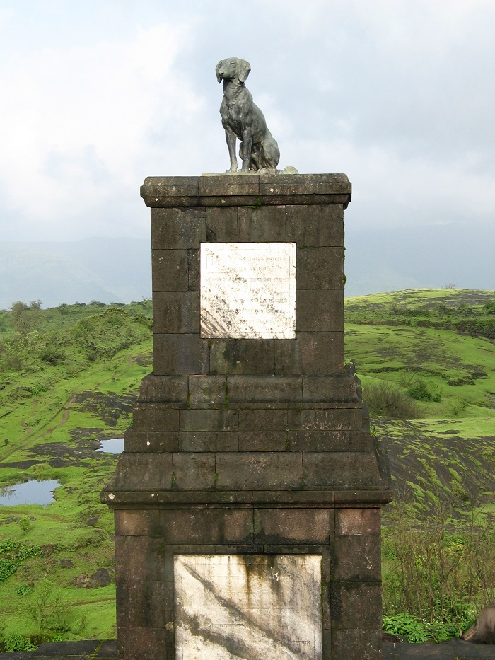

The statue of Shivaji Maharaj's pet dog was removed by alleged members of the Sambhaji Brigade in July 2012 as a protest but was re-instated by
Shri Shivaji Maharaj Raigad Smarak Samiti, the Archaeological Survey of India, sculptor Rambhau Parkhi and the District Administration.

The statue was built in front of Shivaji's grand memorial
The Raigad fort was witness to another dramatic incident on Tuesday night as several members of Sambhaji Brigade allegedly removed a dog's statue from Raigad.
The statue was said to be that of Vaghya, the faithful canine belonging to Chhatrapati Shivaji, a claim which was contested by the Sambhaji Brigade. It is feared that
this incident will increase the divide between the Maratha and Dhangar communities.
The statue of Vaghya was erected in front of Shivaji's memorial (samadhi) at the fort about 125 to 130 years ago by Chhatrapati Shivaji Smarak Samiti. Legend has it that Vaghya threw himself into the pyre during Shivaji's funeral.
S P Sukale, station in-charge at Mahad taluka police station and investigating officer of the case, “At about 12:30 pm on Wednesday, a mob went up the fort and removed the statue.
The exact number of persons in the mob or the manner in which they removed the statue is not yet known. We are in the process of registering a case and all information about this incident can be had only after the process is complete.”
However, Pravin Gaikwad, state president of Sambhaji Brigade, said that 25-30 workers of the organisation have been arrested by the police.
“We have all along demanded this action and are even now trying to remove the statue through an administrative process. I do not know whether the persons who did this act were our members.
Since Sambhaji Brigade has been opposing the presence of this statue, the first needle of suspicion is obviously pointing toward us. We have learnt that some of our workers were apprehended by the police and we are still gathering information about it.”
The incident evoked some sharp reactions. Sanjay Sonawani, author of more than 60 Marathi books and one of the opponents of the demand, said, “These are the signs of a political game to marginalise non-Maratha castes and communities.
Now that these people have removed a historic statue, they can even kill me for opposing them. But one thing I am sure is that the barbarism manifested in removing of the statue would result in the destruction of Maharashtra itself.”
Gaikwad had reiterated three months ago that if their year-long demand to remove the statue is not met, the Brigade's members will raze the statue. “This memorial belongs to one of Shivaji's queens.
There is no proof of dog Vaghya in historical documents. It is another attempt to twist historical facts which we will not tolerate,” the Brigade's leaders had said. Another objection the Brigade had was about the height of the dog's statue which was identical to Shivaji's memorial.
Mahadev Jankar, national president of Rashtriya Samaj Party and Dhangar community leader, heavily criticised the incident. He has asked for action against Sambhaji Brigade and demanded that the statue be reinstated.
The memorial was built with a donation by Indore's Prince Tukoji Holkar in 1906 who gave Rs 5,000 towards the dog's statue. Holkar belonged to the Dhangar (shepherds) community and members of this community rever the canine next to god.